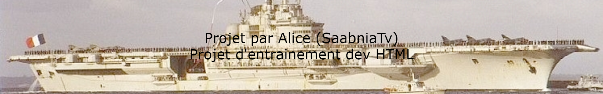

| Les navires celon leur type / Redirection vers les pages | |
|---|---|
| Les Croiseurs : | REDIRECTION PAGE |
| Les Cuirasses : | REDIRECTION PAGE |
| Les Portes Avions : | REDIRECTION PAGE |
| Le Porte Hydravions : | REDIRECTION PAGE |
Retrouver la page complète sur Github UwU
Vous pouvez me contacter sur Discord via mon # = Alice(SaabniaTv)#0001 ou via mon serveur discord
